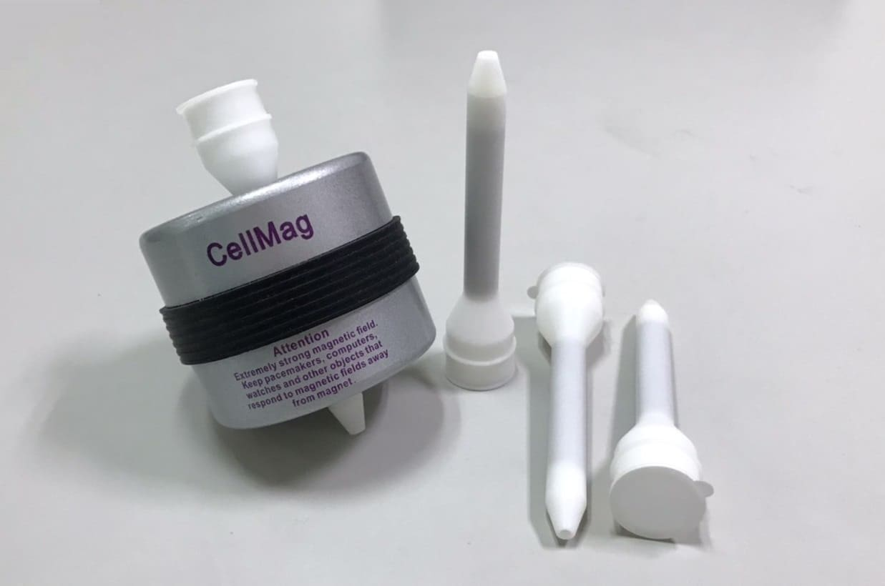

CTC-CM-01
CellMag 產品型號
這一頁集中整理 CellMag 磁座與 PowerMag 高效能磁柱。兩者同樣可應用於磁珠細胞分選系統，但角色不同：CellMag 承接磁力分離操作平台，PowerMag 則用來提升磁珠分選效率，適合搭配耗材與自動檢測系統一併規劃。

若要建立完整分離流程，通常會與 Chiline CATCH 試劑 / 耗材套組和自動檢測系統一起規劃。
適合用來承接磁珠細胞分選操作，搭配對應試管規格與磁柱元件使用。
作為各廠磁珠細胞分選系統的效率強化元件，適合和磁座與耗材套組一起規劃。